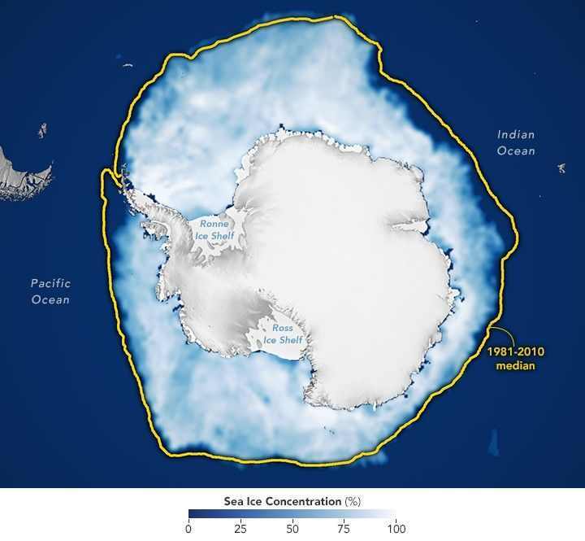
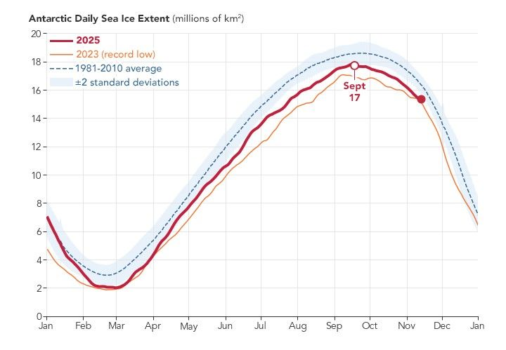

Antarctic Sea Ice Saw Its Third-Lowest Maximum
As winter 2025 loosened its grip on the Southern Hemisphere, sea ice around Antarctica continued to spread across the ocean’s surface. By September 17, it reached its maximum extent of the year, though that peak remained relatively low compared to levels observed before 2016.
On that day, Antarctic sea ice covered 17.81 million square kilometers (6.88 million square miles). This marks the third-lowest maximum in the 47-year satellite record and falls about 900,000 square kilometers (348,000 square miles) below the 1981–2010 average.
This map shows the sea ice extent (white) on September 17 compared to the 1981–2010 average extent for the same day (yellow line). Scientists calculate sea ice extent by dividing the ocean into a grid and summing the area of squares that meet a specific concentration threshold—those that are at least 15 percent covered by ice.
A line graph shows the Antarctic sea ice extent in 2025, represented by a red line. The extent increases during the austral winter months until it reaches a peak in September. The 2025 maximum remains above the record low maximum of 2023, shown as an orange line, but is still below the 1981–2010 average, represented by a dashed line.
Although the region’s sea ice coverage remains low compared to pre-2016 observations, the Antarctic system’s complexity makes predicting and understanding these trends challenging, according to Nathan Kurtz, chief of the Cryospheric Sciences Laboratory at NASA’s Goddard Space Flight Center.
It’s not yet clear whether lower ice coverage in the Antarctic will persist, added Walt Meier, a scientist at the National Snow and Ice Data Center in Boulder, Colorado. “For now, we’re keeping an eye on it,” he said, to see if the lower sea ice levels around the South Pole are here to stay or only part of a passing phase.